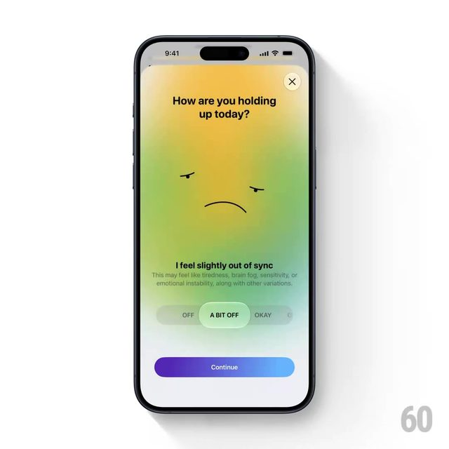

今天周五，细拆知识讲解。看片工具完整看完 Kurzgesagt 昨天新出的 70 秒竖屏 Something in Your Kitchen Could Save Millions of Lives!。值得学的是：先让厨房里的物件自己变成数据方块，国家占比一条条滑上来，再把营养素小块「加进」方块里，数字跟着往上跳。本周已经推过两条 Kurzgesagt，但这条是新的短片，结构最能直接用，所以仍拆它。国外信源扫过之后，合格新作 6 条，另补 2 条经典品牌片，一共 8 条，不够 10 条，不硬凑。点赞接口读到 4 条 11-10 的旧赞和 1 条周精选踩，已补进偏好；今天没有新评论。Mac 目前离线，日报网页仍会发布，审美库拷贝和索引同步留到下次电脑在线再补。
点封面在页面里播放（Vimeo / YouTube / X 需要代理；Vimeo 若没自动开始，再点一下播放键）。觉得好就点「喜欢」，有想法就写在下面的框里保存，我每天出日报前会读，存进偏好和审美库；会多找同类，但每天仍保持类型分散。
好在哪33 秒。浅蓝色棚里，先是一部对折的 Fold8 框住一只青苹果，字幕写 and look who's new。苹果被竖直切开，手机薄片贴着切面站好，用来比谁更薄。随后一排旧款折叠屏在苹果后面排开，标了 2023。苹果被推到一边，手机自己站到画面中间：Nowhere to hide，1.6 mm thinner，Years ahead in Foldables。全程几乎只有蓝棚、一只苹果、一部银色手机 可借对比两个产品，不必并排摆参数表。找一个大家都认识的参照物（这里是被咬过的苹果），让新东西贴着它的切面或厚度站过去，字幕只留半句。颜色锁死棚色和主体
60fps（@60fpsdesign）× Gentler · X 2026-11-26 【看过画面（抽帧）】

X
10.6 秒成片
字体未识别（界面是常规无衬线）
底色从橙到黄到蓝再到绿，手机外的衬底是白
四角有 60fps 水印
好在哪10.6 秒方幅。白底上一部手机，问 How are you holding up today? 屏幕是一张会变的简笔脸：皱眉时底色偏橙，慢慢转到黄、蓝，再到开心的绿。脸从难过、平静到大笑，下面的选项从 A BIT OFF 亮到 GREAT，最后问 Anything you'd like to note? 表情收成一个小笑。颜色和表情绑在一起，没有多余装饰。这条转发片段四角有 60 的水印 可借做情绪或状态选择，不必用五颜六色的图标。一张简笔脸加一层会变的底色就够，选项和脸一起走，背景保持白
好在哪4.5 秒站内快剪。先是紫底上超大的紧缩白字 LES MEILLEURES IDEES FONT L'AVENIR，字旁边有碎裂的纸片或玻璃片。这些碎片把画面撕开，底下翻出荧光绿底和另一句大字，再落到一段正文。颜色只在紫和荧光绿之间切，字始终很大 可借口号和正文切换，不必淡入。用一层碎纸或碎玻璃把上一屏撕开，露出下一个底色。两种高对比底色轮换即可，字只留一句
0:00–0:03 锯齿状的紫、黄、蓝色层往上走。正中咖啡壶变成奶茶杯，再变成一块带大眼睛的彩色高汤块。顶部有一条小字 This short was made possible through a grant by the Gates Foundation。主标题是 SOMETHING IN YOUR KITCHEN COULD SAVE MILLIONS
0:04–0:08 硬切粉红底。一块黄白方块落下，标题 Stock Cubes / Households That Use Them。尼日利亚 99%、塞内加尔 96%、冈比亚 90% 连同国旗从下往上依次滑出
0:08–0:13 三条统计退去。三块标了 Fe 的红橙三角从上方掉入方块，方块发光。圆形擦除切到黄底：一个女人用黄碗喝汤
0:13–0:16 一圈液态环扩开，回到方块。Zn、B9、Vitamin A 三个营养图标弹出。字掉下来：Could Save 18,000 Children in Nigeria Per Year
0:17–0:24 液态转场到粉红底。IODIZED SALT 盐包倾斜，盐粒倒在从下方冒出的地球上，出现 ~89% Consume Salt With Iodine。蓝底上推，盐包落到中间，三个写着 B9 的蓝圆掉进去，计数升到 Preventable Cases of Neural Tube Defects 180,000
 YouTube
YouTube